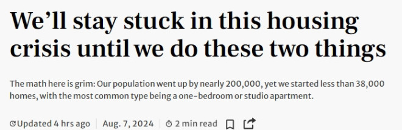
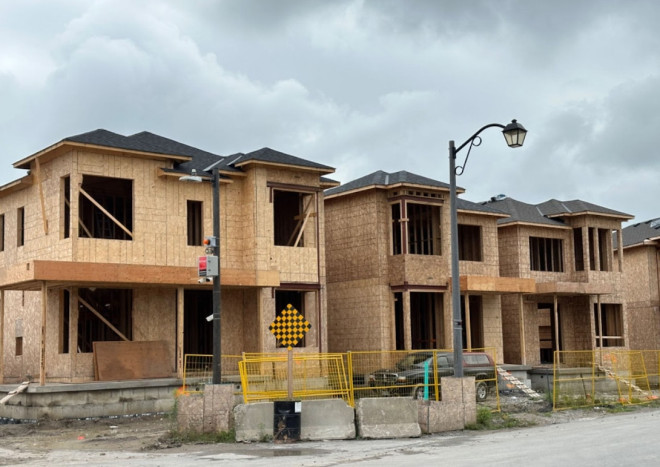

《星报》近日发表学者Mike Moffatt的评论文章，指出“我们将陷入住房危机，除非采取这两项措施”。


文章指出，我们的人口快速增长，而住房建设减少。这是安省住房危机日益严重的原因，随着大多伦多地区的一居室公寓租金超过$2000，问题愈发严重。
文章称，人口增长的影响不容小觑。在过去36个月中，安省经历了相当于十年的人口增长，增加了120万人口。仅在今年上半年，安省人口就增加了近20万。
如果我们能建设足够的住房、学校和基础设施，我们是可以支持这种增长的，但事实并非如此。过去6个月，新开工的住房数量只有37,245套，比2023年上半年减少了6,000多套。其次，安省大多数新建住房为公寓，无论是租赁还是共管公寓，约三分之二的新开工住房为一居室或单间公寓。
显然，这些数据令人担忧。这说明安省每建造一个卧室就有大约三到四个人口增加。这导致了历史低位的空置率、飙升的租金，以及人们被迫住在“恶劣的条件”下，比如宾顿的一间地下室单元里挤了25名国际学生。
文章作者Moffatt是Smart Prosperity Institute的资深主管和播客The Missing Middle的主持。
他认为，解决这一问题需要同时应对缓慢的住房建设和高人口增长。安省住房建设放缓的部分原因，如全球高利率，是我们无法控制的。然而，其他省份如阿尔伯塔省和新斯科舍省在这些高利率下仍然设法增加了建设量，而加拿大央行最近的降息应有所帮助。卑诗省面对与安省相似的挑战，通过一系列积极的分区改革，已能减缓住房开工量的下降。
全国其他地区的住房开工量在上升，而安省却在下降，这表明省政府需要采取更多行动。省政府设定了今年开工125,000套住房的目标。经过半年，我们的37,245套开工量还不到目标的30%。2022年2月，省政府发布了《住房负担能力工作组报告》，这是解决危机的蓝图。两年多后，省政府自称只实施了74条建议中的28条。同时，它还允许市政当局将开发费提高了数万元，从多伦多到尼亚加拉瀑布再到渥太华，这增加了新租户和购房者的成本，导致一些项目被搁置。
在人口增长方面，联邦政府承诺减少在加拿大的非永久居民的数量，主要是国际学生和临时外籍工人。他们承诺在未来三年内将非永久居民比例降低到加拿大人口的5%以下，这相当于减少近100万人。如果实现，这将减轻租金压力，确保我们邀请到的学生在这里拥有最佳体验。然而，加拿大央行最近质疑联邦政府对非永久居民增长目标的承诺，称“实现5%的目标所需的时间将更长”。联邦政府必须发布一个可信的计划，否则安省的人口增长将超过住房供应。
作者最后表示，安省的住房危机是可以解决的。我们在供需两方面都有解决方案，许多政府已经承诺实施这些方案。他们只需要付诸行动。